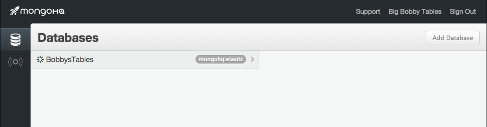
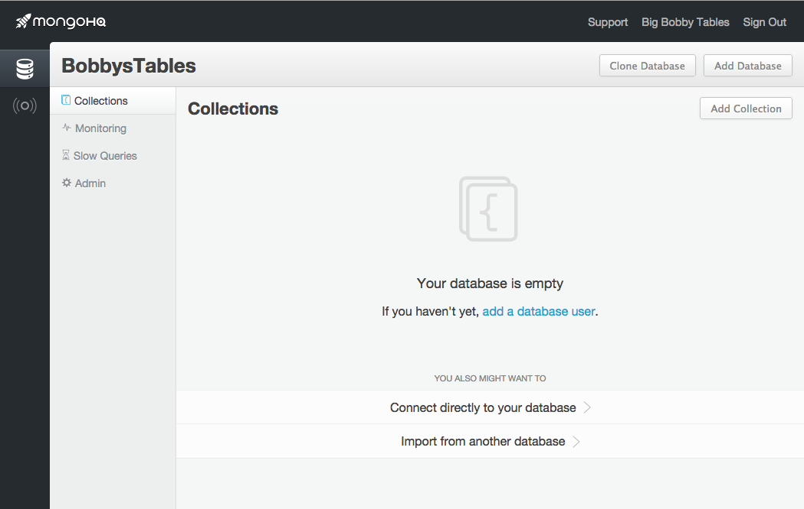
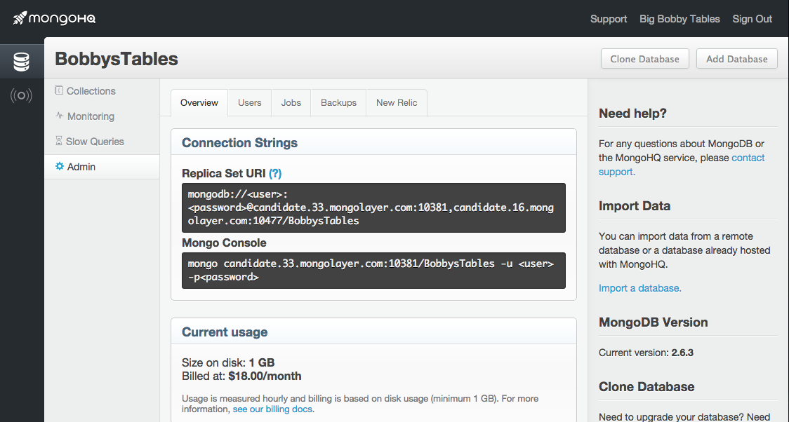
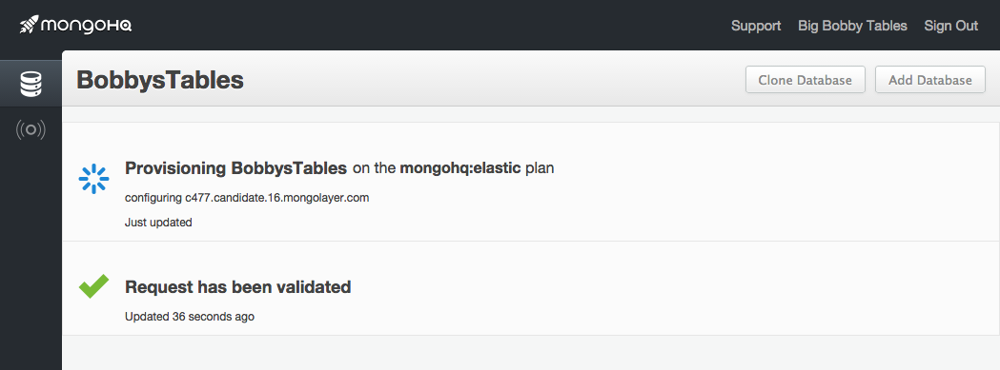
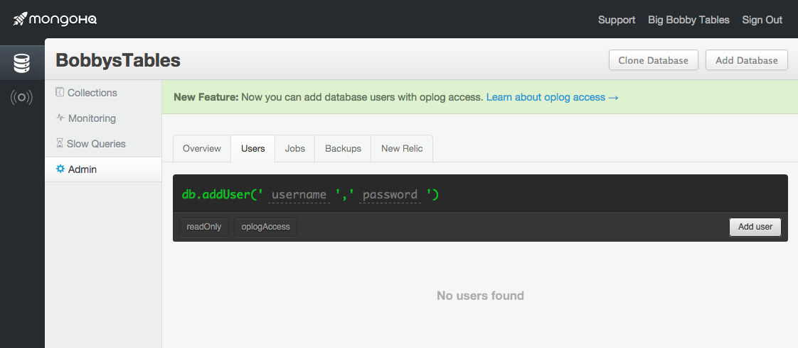

Big Bobby Tables gets a MongoHQ database
After a small flood of retweets, we were happy to see that the people of Twitter liked finding our signup form immortalised XKCD’s Little Bobby TablesThis signup form is designed to be as quick as possible. We just need your name and, if you have one, company name, an email address, a password (and confirmation of that password) and the name of the database you want created. By default, the form offers our Elastic Deployment of MongoDB. There are other options, such as our our custom dedicated servers configured for tasks which may be outside the scope of Elastic Deployments, and our space-limited, support-free sandboxes designed for educational use, but we’ll stick with the ease of Elastic Deployments.
{kind=link}
An Elastic Deployment will cost you $18 per gigabyte of storage a month, so you’ll need to enter some payment details. The signup form will pop up a window for credit card details and billing address and once in, the magic begins. We find ourselves looking at the dashboard for our new account:
At the top, links to support and account information and to the left icons to select viewing databases or alerts. We’re already viewing databases and our new database has a spinner next to its name indicating it is being provisioned. If we click on the database entry, we get to see the database view:
We’ll want to have a look at administrating the database, so we click on Admin:
This opens on the Admin overview and it is full of useful information, like what the URI to connect to the new database is and what command line invocation you should use to start the Mongo shell with the database. If we click on the Jobs tab, we can see what’s currently going on with our new database:
Whenever anything infrastructure-wise is happening with the database, you get to see it on this page. It’s setting up the various components of the replica set in this snapshot but the primary database is already up and running. That means we can go add a user and a password by selecting the Users tab:
The data entry field is formatted as a command you might issue through the Mongo shell. Just click on and enter a user name and password and click Add User to add your first user to your database. With those credentials in hand, you can now make use of the URI and Mongo shell invocation from earlier. You can carry on using the dashboard to create a collection, set up indexes and add more users. You can also call up live views of your database’s perfomance:
 There’s so much to do and all the database you’ll need to power whatever you are planning. So why not join Little and Big Bobby Tables and sign up for MongoHQ today.
There’s so much to do and all the database you’ll need to power whatever you are planning. So why not join Little and Big Bobby Tables and sign up for MongoHQ today.